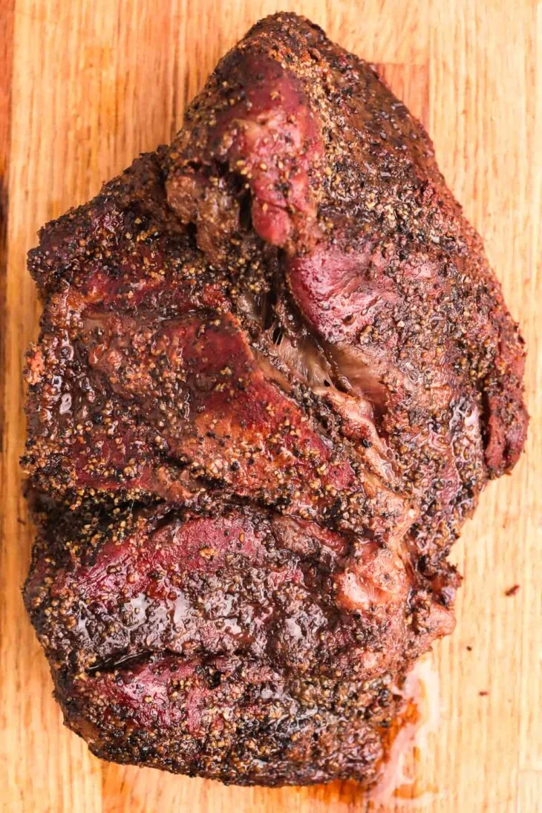

Smoked Chuck Roast

A fantastic low-maintenance alternative to the delicious, but finicky, smoked brisket.
The smoked chuck roast is a great "set it and forget it" recipe. It retains smoke very well, doesn't stall like a brisket tends to do, and is delicious. It's very simple and is a blank canvas for you to season and flavor as desired.
Ingredients:
- Chuck roast, 3-4 pounds
- Kosher Salt
- Ground Black Pepper
Directions:
- Season the roast liberally with salt and pepper on all sides. Other seasonings can be added if desired.
- Allow roast to rest in the fridge for at least 2 hour, ideally overnight. Pull roast out of the fridge 45-60 minutes prior to cooking to allow it to reach room temperature.
- Preheat smoker to 225° F, using your preferred type of wood. Insert a thermometer probe in the thickest part of the roast.
- Cook roast in smoker until internal temperature reaches about 205° F. This can take as little as 4-5 hours, or upwards of 8-9 hours. Cooking time depends on a number of factors, so be sure to watch the thermometer.
- If desired, pull roast out when the internal temperature reaches about 160° F and wrap with preferred wrapping material, like oven-safe butcher paper or aluminum foil. This will help retain some moisture, but will soften the bark.
- You can also baste roast with your favorite barbeque sauce or glaze.
- Once the roast has reached temperature, remove from smoker and wrap. Allow to rest in a small cooler for approximately an hour.
- When ready to serve, cut slices against the grain.
Notes:
As mentioned above, cook times can vary based on a number of factors. Watch the thermometer as the temperature is more important than the cook time.
This cut of meat benefits from the "low and slow" style of cooking. This allows the connective tissure to break down and make the meat tender, soft, and juicy.
Be sure to cut against the grain. This will help with the tenderness of the pieces. I personally like to chop up the slices into smaller bite-size chunks.